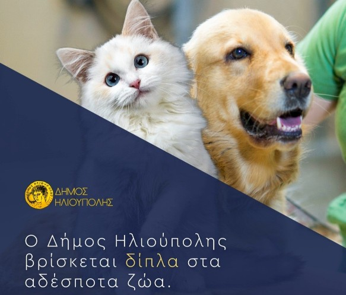

Σε θέματα ζωοφιλίας και ζωοπροστασίας δεν χρειάζονται πρόλογοι. Ή προσπαθείς εμπράκτως να γίνεις μέρος της λύσης για τις συνθήκες ζωής των αδέσποτων ή μεταβιβάζεις τις δικές σου ευθύνες (εν προκειμένω την υποχρέωση που έχουν οι Δήμοι από το 2013) σε άλλους… Είτε, για παράδειγμα στην επόμενη δημοτική αρχή, είτε σε κάποια φιλοζωική εταιρία, η οποία θέλοντας και μη παίρνει πάνω της όλο το βάρος για τη φροντίδα των τετράποδων φίλων μας…
Έπρεπε να μπούμε στη δεύτερη δεκαετία της νέας χιλιετίας για να αναλάβει κάποιος Δήμος πρωτοβουλία για τη φροντίδα των αδέσποτων ζώων. Και αυτός είναι ο Δήμος Ηλιούπολης, ο οποίος πρωτοπορεί – σε συνεργασία με τη Ζωοφιλική Ένωση Ηλιούπολης και όλους τους εθελοντές – στον τρόπο διαχείρισης του πολύ σημαντικού ζητήματος και γίνεται παράδειγμα για όλους τους Δήμους της χώρας μας. Σε σημείο μάλιστα να… σπάνε τα τηλέφωνα του αντιδημάρχου από «συναδέλφους» του, οι οποίοι είτε ζητούν έξτρα πληροφορίες για την οργάνωση και τη διεκπεραίωση ενός τόσο σύνθετου ζητήματος, ή (κλασικά) ζητούν το… λόγο, γιατί χάλασε τη βολή τους από τη στιγμή που έπρεπε και εκείνοι με τη σειρά τους να αντιδράσουν και να πράξουν αναλόγως.
Για να τα βάλουμε κάτω, ας δούμε τα πεπραγμένα της Δημοτικής Αρχής Ηλιούπολης από τον Σεπτέμβρη του 2019:
Αξιο αναφοράς ότι μέχρι τώρα έχουν καταγραφεί πάνω από 160 δημότες της Ηλιούπολης ως φροντιστές αδέσποτων ζώων. Εχουν καταγραφεί πάνω από 3.000 αδέσποτες γάτες σε 200 ενεργές αποικίες που επιβλέπονται από φροντιστές και το Δήμο

Μάλιστα, έγιναν περισσότερες από 300 στειρώσεις το 2020. Προγραμματίζονται άλλες 400 μέχρι και τον Ιούλιο του 2021 και θα συνεχιστούν αυξητικά και τους επόμενους μήνες.
Για το 2021 ο Δήμος Ηλιούπολης προγραμματίζει:
«Ως Δήμος αναγνωρίζουμε την τεράστια εθελοντική προσφορά των συνδημοτών μας στην φροντίδα των αδέσποτων, μεθοδικά αναλαμβάνουμε σταδιακά την ευθύνη και το οικονομικό βάρος με ξεκάθαρο στόχο, σύντομα να αποτελεί η Ηλιούπολη πρότυπο φιλοζωικής κουλτούρας και προστασίας των αδέσποτων ζώων», επισημάνει ο αρμόδιος αντιδήμαρχος, Αποστόλης Στασινόπουλος.
Δική μας ευχή και προτροπή στους υπόλοιπους Δήμους είναι να παραδειγματιστούν από την άξια επαίνων πρωτοβουλία του Δήμου Ηλιούπολης. Είναι καιρός να πάψουμε να κρύβουμε κάτω από το χαλί τα προβλήματα των αδέσποτων ζώων…
03/06/2021, 12:59
Αθανάσιος
Ότι και να πω είναι λίγο! Αν γενικά η τοπική αυτοδιοίκηση σε όλους τους Δήμους επεδείκνυε τον μισό ζήλο, τότε θα είχαμε εξαλείψει τη συντριπτική πλειοψηφία των κακών που ταλαιπωρούν αυτή την έρημη Χώρα εδώ και δεκαετίες. Πολλά μπράβο! Είσαστε άξιοι συγχαρητηρίων!